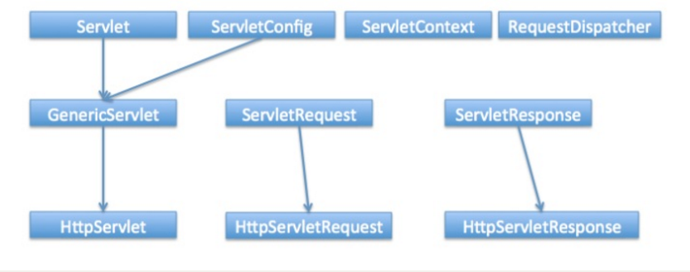
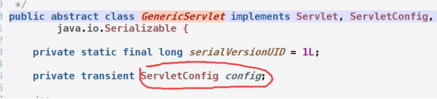
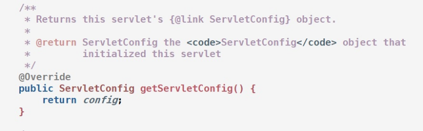
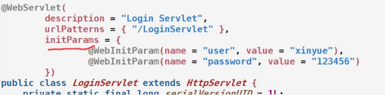
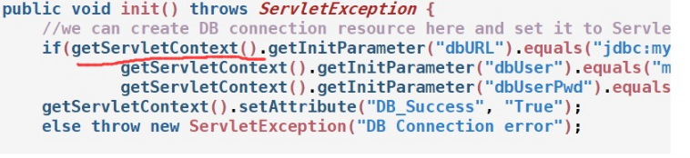
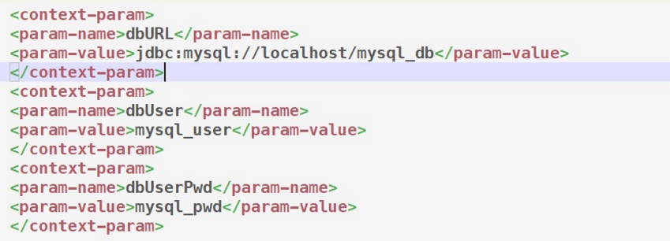
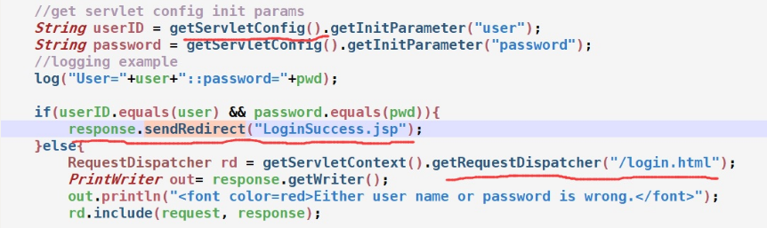

最近在学习Servlet时，看到有些时候会用到ServletConfig和ServletContext两个类，而且这两个类还有点相似之处，所以写篇博客总结一下。首先看一下整个Servlet的层次结构。

基本上主要的和Servlet相关的类就这么多了，可以看到ServletConfig和ServletContext在其中的位置和其他类的关系。
ServletConfig API
ServletConfig接口被用于传递一些配置信息给Servlet，每一个Servlet都独享一个自己的ServletConfig对象，然后servlet容器负责创建这个对象。我们可以在web.xml或者是WebInitParam注解方式设置一些servlet的初始参数信息，servlet通过得到ServletConfig对象实例调用其中的方法来得到这些初始信息。
常用的方法如下：
java.lang.String getInitParameter(java.lang.String name) 根据名称获取参数值
java.util.Enumeration getInitParameterNames() 得到所有参数
ServletContext getServletContext() 获取servlet上下文对象
java.lang.String getServletName() 得到servlet名称
通过在web.xml或注解中设置servlet初始参数，然后可以用上述方法获得这些参数：
web.xml配置文件:
1 | <servlet> |
获取方式如下：
1 | String user = getServletConfig().getInitParameter("user"); |
注意：这里有个问题，为什么可以直接调用getServletConfig()方法，在Eclipse里Ctrl+鼠标点进去看发现调用的是GenericServlet类里的getServletConfig()方法。这是因为我们的Servlet类继承自HttpServlet，而HttpServlet又继承了GenericServlet类。
GenericServlet类的定义如下：

可以看到GenericServlet类中定义了ServletConfig对象的引用，而且还是实现了ServletConfig接口。

其实也可以直接使用getInitParameter(“user”)，由于GenericServlet类实现了ServletConfig接口，所以其也会重载ServletConfig接口中的函数。
ServletContext API
不同于ServletConfig，ServletContext接口主要用于保存web应用中全局信息，所有Servlet都可以共享这些信息。其会在web应用被加载时创建，然后其他servlet就可以调用它了。
主要的方法如下:
（1）得到web应用的上下文路径：
java.lang.String getContextPath()
（2）获取web应用的全局参数 ：
java.lang.String getInitParameter(java.lang.String name)
java.util.Enumeration getInitParameterNames()
（3）域对象相关的方法：
java.lang.Object getAttribute(java.lang.String name)
void setAttribute(java.lang.String name, java.lang.Object object)
void removeAttribute(java.lang.String name)
（4）用于转发：
RequestDispatcher getRequestDispatcher(java.lang.String path)
（5）web应用加载资源文件方法：
java.lang.String getRealPath(java.lang.String path)
java.io.InputStream getResourceAsStream(java.lang.String path)
ServletConfig和ServletContext的应用
下面通过一个登陆的例子来看一下两者的用法，参考：https://www.journaldev.com/1877/servlet-tutorial-java#servlet-interface。
在html表单里请求LoginServlet，用户输入指定的用户名和密码即可登陆成功，跳转到登陆成功页面，失败则显示登陆失败。
我们主要讲解一下Servlet中的代码。首先在注解（或web.xml）中将用户名和密码作为servlet的初始参数存储（即前面讲ServletConfig相关的）：

通过ServletContext中的方法获取web应用的全局配置信息：

这里将数据库的配置作为全局信息，定义在web.xml文件的context-param中：

在doPost方法中通过ServletConfig获取servlet的初始参数：

如果登陆成功，通过sendRedirect方法重定向到LoginSuccess.jsp页面，否则转发到登陆页面。（这里要注意sendRedirect和getRequestDispatcher方法的区别）
总结和感想
1.源码是最好的学习资料，遇到问题时，要学会从源码中寻找答案。包括类的层次结构和每个方法的作用。
2.在遇到一个新知识时，首先要知道这个知识涉及到哪些主要的类，这些类的关系是怎样的，然后再看每个类的方法。
参考资料：
http://www.cnblogs.com/vmax-tam/p/4127396.html
https://www.journaldev.com/1877/servlet-tutorial-java#servlet-interface
![微信分享二维码]()